set.seed(123)
sample_heights <- draw_sample(1000)
sample_mean <- mean(sample_heights)
round(sample_mean,2)[1] 175.11Quantile Regression
By the end of this lecture, you should be able to:
heights?summary() and var().
What about now? Do we have a better idea about the distribution?
A. Yes, having different quantiles gives us a better idea about the distribution of heights.
B. Not, at all!

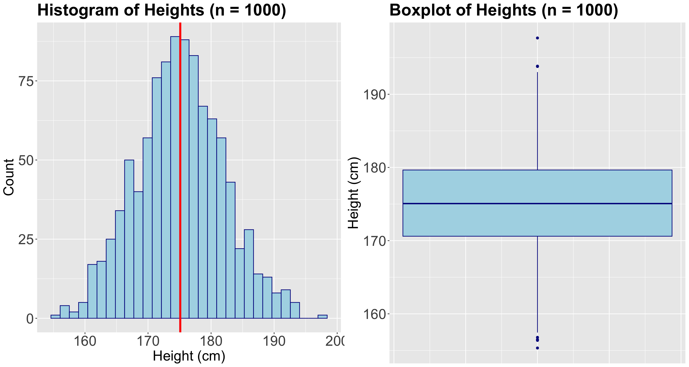
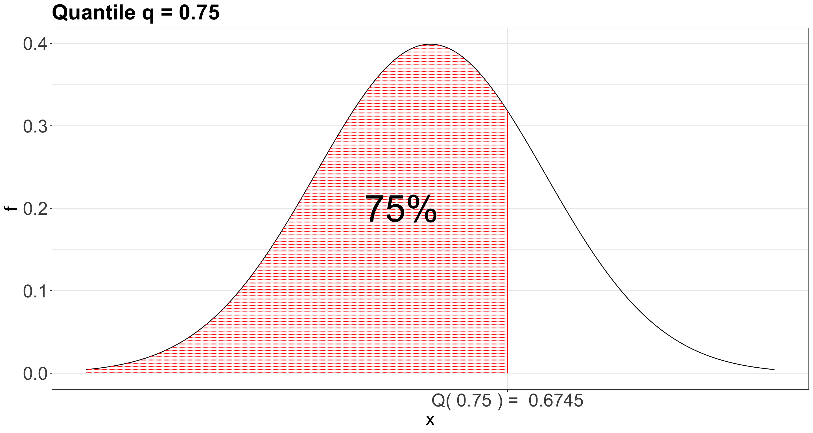
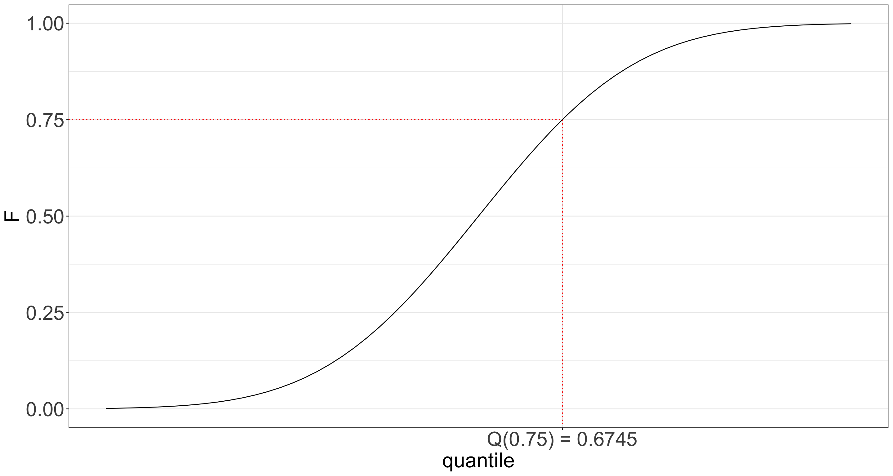
\[ \mathbb{E}(Y_i \mid X_{i,j} = x_{i,j}) = \beta_0 + \beta_1 x_{i,1} + \ldots + \beta_k x_{i,k} \; \; \; \; \text{since} \; \; \; \; \mathbb{E}(\varepsilon_i) = 0. \]
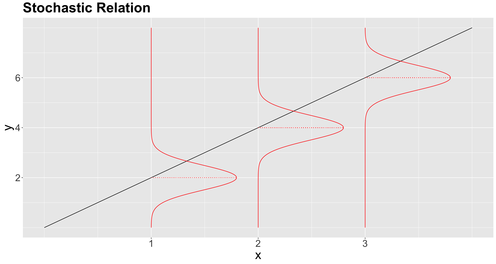
Is it possible to go beyond the conditioned mean?
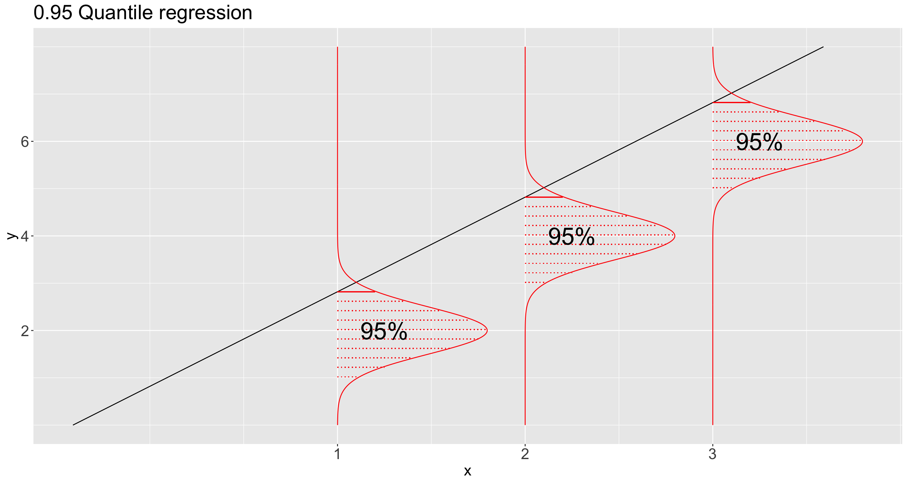
How do driver’s years of experience affect buses’ travel time when considering the 25% fastest travels, 50% fastest travels, and 90% fastest travels?
How does the alcohol price affect the weekly consumption of light drinkers, moderate drinkers, and heavy drinkers at given cut-off values of alcohol consumption?
During December in Vancouver, with a 95% chance, what is the maximum snowfall threshold?
How do driver’s years of experience (\(X\)) affect buses’ travel time (Y) when considering the 25% fastest travels (\(\tau = 0.25\)), 50% fastest travels \((\tau = 0.5)\), and 90% fastest travels (\(\tau = 0.9\))?
How does the alcohol price (\(X\)) affect the weekly consumption (\(Y\)) of light drinkers (\(\tau = 0.25\)), moderate drinkers (\(\tau = 0.5\)), and heavy drinkers \((\tau = 0.9)\) in given cut-off values in weekly alcohol consumption?
During December (\(X\)) in Vancouver, with a 95% (\(\tau = 0.95\)) chance, what is the maximum snowfall (\(Y\)) threshold?
Teams dataset from the Lahman package.runs: Runs scored, a count-type variable.hits: Hits by batters, a count-type variable.Let us create a scatterplot of hits (our regressor) versus runs (our response), even though these variables are not continuous.
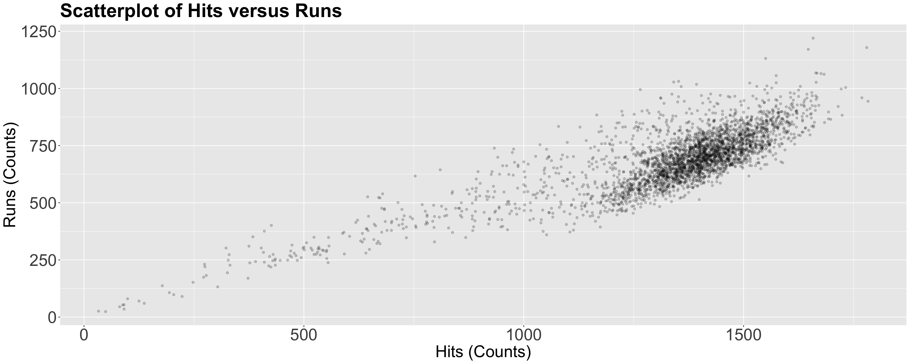
\[ \mathbb{E}(Y_i \mid X_{i,j} = x_{i,j}) = \beta_0 + \beta_1 x_{i,1} + \ldots + \beta_k x_{i,k}. \]
\[ Y_i = \underbrace{\beta_0(\tau) + \beta_1(\tau) X_{i,1} + \beta_2(\tau) X_{i,2} + \ldots + \beta_k(\tau) X_{i,k}}_{\text{Systematic Component}} + \underbrace{\varepsilon_i(\tau).}_{\text{Random Component}} \]
\[\begin{gather*} \varepsilon_i(\tau) = Y_i - \underbrace{\left[ \beta_0(\tau) + \beta_1(\tau) X_{i,1} + \beta_2(\tau) X_{i,2} + \ldots + \beta_k(\tau) X_{i,k} \right]}_{\text{Systematic Component}}. \end{gather*}\]
teams dataset to fit a Quantile regression of runs (\(Y\)) versus hits (\(X_1\)) on the response’s quantile \(\tau = 0.75\).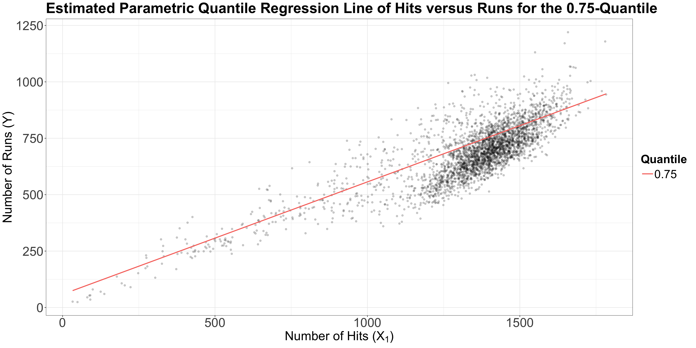
teams dataset, let us plot the three estimated parametric Quantile regression lines for quantiles \(\tau = 0.25, 0.5, 0.75\).runs, whereas our regressor \(X_1\) is hits.
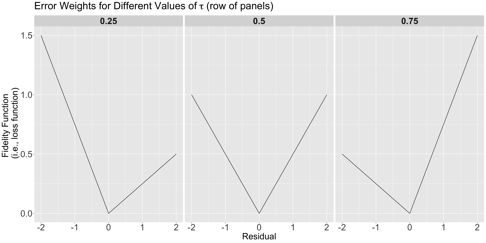
\(\tau = 0.25\)
Note that for low values of \(\tau\), we consider overpredicting \[e_i = y_i - \hat{y_i} < 0\] WORSE than underpredicting \[e_i = y_i - \hat{y_i} > 0.\]
\(\tau = 0.5\)
\(\tau = 0.75\)
Note that for high values of \(\tau\), we consider underpredicting \[e_i = y_i - \hat{y_i} > 0\] WORSE than overpredicting \[e_i = y_i - \hat{y_i} < 0.\]
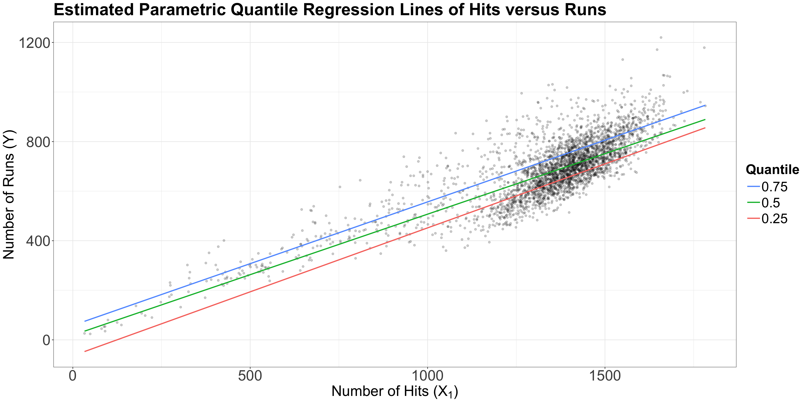
If we have \(n = 100\) points to fit the \(0.7\)-quantile, then:
teams dataset again. In this example, we will estimate the quantiles of runs as a linear function of hits. We can obtain these estimated \(0.25\), \(0.5\), and \(0.75\)-quantile regression lines via geom_quantile().estimated_quantile_regression_lines <- ggplot(teams, aes(hits, runs)) +
geom_point(alpha = 0.2, colour = "black") +
geom_quantile(
quantiles = c(0.25, 0.5, 0.75), aes(colour = as.factor(after_stat(quantile))),
formula = y ~ x, linewidth = 1
) +
theme_bw() +
labs(
x = "Number of Hits (X)",
y = "Number of Runs (Y)"
) +
theme(
plot.title = element_text(size = 30, face = "bold"),
axis.text = element_text(size = 26),
axis.title = element_text(size = 26),
legend.text = element_text(size = 24, margin = margin(r = 1, unit = "cm")),
legend.title = element_text(size = 24, face = "bold"),
legend.key.size = unit(1, "cm")
) +
guides(colour = guide_legend(title = "Quantile", reverse = TRUE)) +
ggtitle("Estimated Parametric Quantile Regression Lines of Hits versus Runs")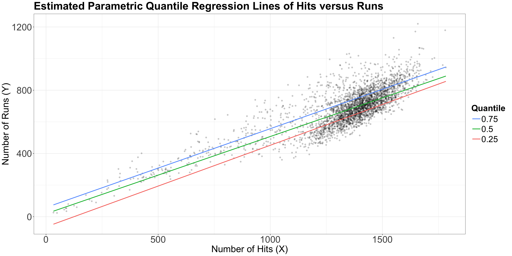
R!{quantreg} package, we will use the rq() function to fit the parametric Quantile regression at \(\tau = 0.25, 0.5, 0.75\).formula argument as the previous fitting functions along with data.tau.se = "boot" and bsmethod = "xy".R = 1000 replicates in function summary().
Previous research has shown you that a large number of runs is associated with a large number of hits. Having said that, for those teams at the upper 75% threshold in runs, is this association significant? If so, by how much?
Our sample gives us evidence to reject \(H_0\) with a \(p\text{-value} < .001\). So
hitsis statistically associated to the \(0.75\)-quantile ofruns.
hits and the \(0.75\)-quantile of runs via the corresponding \(\hat{\beta_1}(0.75)\).For any given team that scores 1000 hits in a future tournament, how many runs can this team score with a 50% chance (centred around this future tournament’s median runs)?
predict().lambda, a penalization parameter:
lambda) will provide a better approximation, but with too much variability – we might be prone to overfitting.lambda) will lose local information favouring smoothness – we might be prone to underfitting.R, non-parametric Quantile regression is performed using the function rqss() from library quantreg.lm() and glm() functions.rqss() each regressor must be introduced in the formula using the qss() function (as additive non-parametric terms). For example, qss(x, lambda = 10).rqss(y ~ qss(x, lambda = 10), tau = 0.5, data = my_data)rqss() to run a non-parametric Quantile regression with runs as the response and hits as the regressor.tau = 0.25 and tau = 0.75.rqss() does not allow multiple values for tau.tau value. Here, we try a lambda = 100.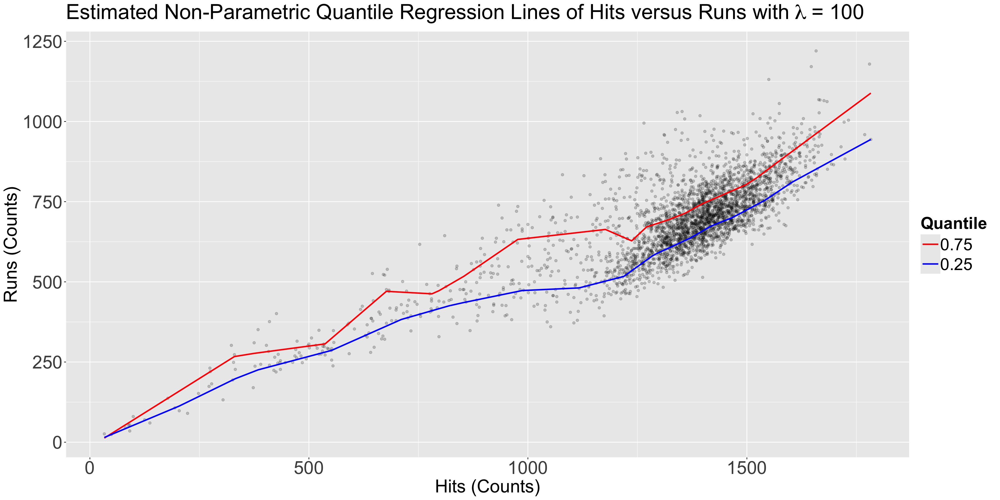
lambda = 10?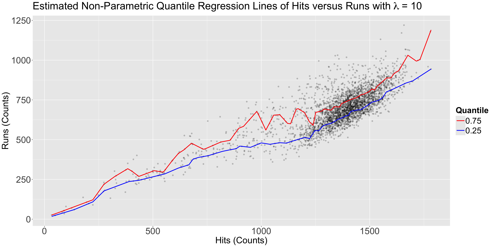
For any given team that scores 1000 hits in a future tournament, it is estimated to have a 50% \((0.75 - 0.25 \times 100\%)\) chance to have between 491 and 625 runs.

DSCI 562 - Regression II